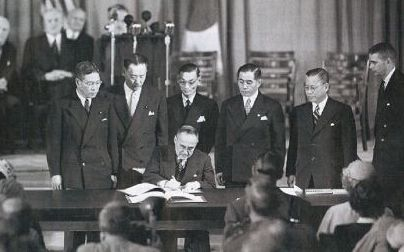
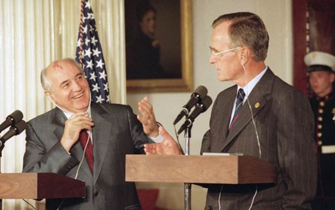
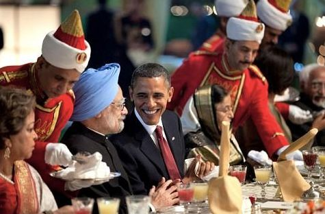
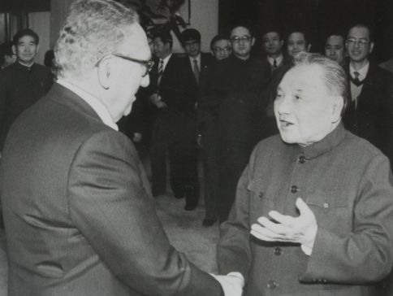
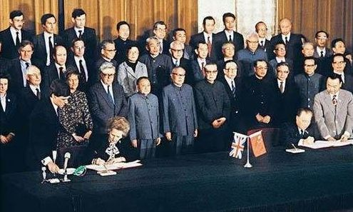
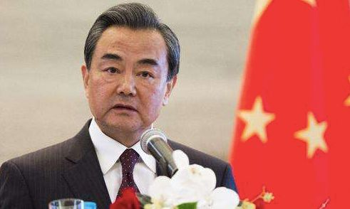
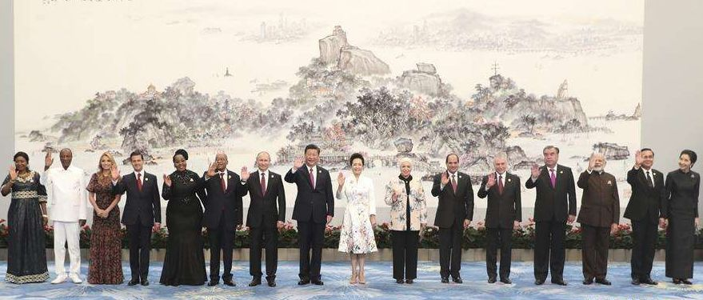
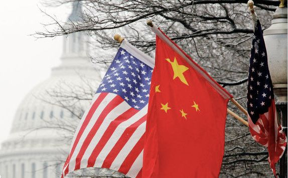

收录于合集
简
陈永
北京大学国际关系学院博士研究生
摘要
中国和美国各自倡导的伙伴关系既有渊源，又有显著不同。不过，由于伙伴关系概念缺乏清晰界定，关于伙伴关系的学理研究难以深入，中国倡导的伙伴关系也难以摆脱美国主导的西方伙伴关系的语境。伙伴关系本质上是一个不断演化的外交政策概念。伙伴关系政策既承担国家对外战略任务，也有独特的功能。美国主导的伙伴关系是美国旨在维护世界领导地位，以联盟为核心而构建的具有等级和功能差异的双边或多边合作关系。中国特色的伙伴关系是中国为了营造有利的外部环境而倡导的一种“不对抗、不结盟、不针对第三方”的平等、和平和包容的新型国际合作范式。经过比较，伙伴关系可以被界定为一国为了实现对外战略的总体目标，基于特定的共同利益和可能的共识，与另一方正式建立的，具有较高政治平等性和政策灵活性的稳定的合作关系。
关键词
地区与国别政治 中国 美国
伙伴关系 联盟 全球伙伴关系网络
关于伙伴关系的比较研究
自20世纪90年代各大国普遍开展伙伴关系外交以来，中外学者就开始关注这一现象。本文首先梳理中国和国外学界对伙伴关系相关概念的研究和对伙伴关系外交政策的认知差异。
（一）关于伙伴关系概念的研究
由于伙伴关系概念尚不清晰，从学理层面试图对伙伴关系概念进行清晰界定通常是从与伙伴关系相关概念的比较入手。澳大利亚悉尼大学托马斯·威尔金斯博士（Thomas S. Wilkins）把国际安全合作范式分为联盟（alliance）和联合阵线（Alignment），他把战略伙伴关系视为联合阵线的一种新形式，并界定为“国家或其他行为体为了比独自更好地共同利用经济机遇或和应对安全挑战而达成的结构性协作”。这一定义将战略伙伴关系与联盟进行了有效区分，但是因为“联合阵线”是一个描述性的提法，所以，并没有区分开战略伙伴关系、同盟（coalition）和安全共同体（Security community）等概念。此外，伙伴关系和联盟是正式的外交政策话语，而联合阵线和安全共同体等概念更多是对国家间合作的学理性表述。同济大学特聘教授门洪华和中央党校博士生刘笑阳注意到了中西方话语中伙伴关系的内涵不同，依据其共性认为伙伴关系是“国家间基于共同利益、通过共同行动，为实现共同目标而建立的一种独立自主的国际合作关系”，是“不结盟框架下的一种战略安排，是更具弹性的新型双边合作关系”。虽然这一界定试图概括伙伴关系的内涵，但却因为伙伴关系复杂多变和本身的政策模糊性而不够精确。这些界定伙伴关系的努力成效不佳表明，单纯仅进行学理性的概念比较，而非将伙伴关系视为一种具有传统的外交政策理念，从而在历史演变的进程中认识演变中的伙伴关系理念，因而伙伴关系不仅难以在学理上被界定，伙伴关系政策也难以被理解。
（二）对伙伴关系政策的不同认知
不仅伙伴关系概念缺乏清晰界定，而且人们对这一外交政策理念的认知也不相同。与联盟相比，同样作为正式的外交话语，关于伙伴关系有四种具有代表性的观点。 第一，伙伴关系是联盟的合作形式或外围补充 。 美国一些学者将联盟与伙伴关系并称，并不严加区分，不过，这种情况主要侧重于安全领域。 第二，伙伴关系是联盟或共同体的过渡形式或扩大工具 。 伙伴关系的这个意义通常被用来理解“北约”或欧盟扩大。这两种是西方学界对伙伴关系的主流看法，直接塑造了人们对伙伴关系的认识。 第三，功能性的合作政策 。 随着大国间纷纷建立双边或多边的伙伴关系，它被广泛视为是一种功能性政策，旨在以协商和对话方式达成特定领域的合作。 第四，伙伴关系是一种新型的国际合作框架 。 许多国内学者认为伙伴关系是中国奉行独立自主的和平外交政策、坚持不结盟政策的重要体现，可以作为中国推动双边乃至多边合作的重要路径和框架。
伙伴关系本质上是一个不断演化的外交政策概念。伙伴关系政策在国家对外政策选项中具有独特性，即它既分担一定的战略任务，又具有特定的功能 。
美国倡导的伙伴关系
（一）美国冷战期间的伙伴关系
“伙伴关系”一词具有实际的外交政策意义始于“冷战”期间美国对与盟友及苏联关系所进行的战略调整。在此期间，巩固在西方世界的领导地位和取得美苏争霸的胜利一直是美国全球战略的基本目标，伙伴关系外交政策则是其不断取得和维持战略优势地位的有效手段。
1. 协调联盟的伙伴关系 。 伙伴关系在外交史上并不是一个具有特定意义的描述性词汇，其含义是国家间关系紧密、合作融洽。伙伴关系被正式援引为外交政策概念始于美国对美日关系的再定位。朝鲜战争爆发后，美国一改对日本的限制削弱政策，转而扶植和保护日本。1952年4月28日，《日美安全保障条约》生效，日本成为美国的军事盟国。在美国的保护下，日本利用自身地缘优势和美国的经济扶植政策，大力发展经济。虽然接受了外交自主权利丧失的政治代价，日本却不断要求调整同美国的关系，尤其是寻求在日美联盟的框架下与美国建立较为平等的经济关系。在日本的争取下，1960年缔结的《日美共同合作和安全条约》规定日美将推进自由制度建设，并“将设法消除它们在国际经济政策中的冲突，并且将鼓励两国之间的经济协作”。为落实这一精神，日美从制度入手，建立双边经济合作和对话机制。其中，岸信介曾向美国建议设立日美经济协商机构。日本加强与美国经济合作的愿望得到美国积极回应，美国国家安全委员会第6008/1号文件规定，以伙伴关系和平等的精神处理美国与日本的关系，充分考虑日本的至关重要的利益并就相互感兴趣的事务与日本政府协商。至此，伙伴关系已经不单是描述两国关系亲密度的词汇，而是指导美国制定对日政策的纲领性原则。

1951年9月8日，《日美安全保障条约》签订
此后，日美建立了不断拓展的伙伴关系，到20世纪70年代中期，两国经济伙伴关系扩展到政治领域。不过，应该指出，虽然美日都强调伙伴关系的平等性，但由于日本安全高度依赖美国保护，因而，日美很难建立平等的政治经济伙伴关系。与之类似，伙伴关系也是美国在北约架构下积极回应欧洲盟国建立平等的大西洋关系的呼声，保持联盟内部稳定的有效举措。然而，虽然美国强调在大西洋伙伴中欧洲应该是一个整体，但是欧洲始终无法以整体姿态与美国进行对话，伙伴关系基本上是美国与盟友双边意义上的。需要指出的是，虽然欧洲国家要求在战略和政策层面与美国实现平等，但是大西洋联盟内部并没有形成平等的大西洋伙伴关系，美欧伙伴关系也只是美国与欧洲盟国加强战略协调的一项开放性框架。
2. “超越遏制”的伙伴关系 。 美国为了和平演变苏联也积极发展“新的伙伴关系”。20世纪80年代，苏联国内僵化更加严重，面临的外交形势也因为入侵阿富汗而恶化。戈尔巴乔夫上台后，在“新思维”指导下缓和与美国的关系，以便为国内改革营造有利的国际环境。到1989年，苏联国内改革陷入停滞，东欧剧变也已经失控。苏联无力与美国争夺霸权，便在外交新思维的指导下转而寻求与美国结束冷战。同年5月12日，布什总统发表演说，宣称既然处于颓势的苏联想在西方寻找进行“裁军和改革的志愿伙伴”，现在是采取“超越遏制的政策”，“将它拉回到国际社会的时候了”。

戈尔巴乔夫（左）与老布什（右）
在和解愿望的指引下，美苏首脑经过多轮会晤，终于在1989年12月“马耳他会晤”时称东西方“冷战行将结束”，在1990年5月底6月初华盛顿会晤时称“冷战已成为历史”。接下来，1990年9月，布什和戈尔巴乔夫在赫尔辛基会晤时表示美苏“新的伙伴关系已经开始”。9月11日晚，布什向国会两院联席会议发表重要演说强调赫尔辛基会晤“极有成效”，美苏新伙伴关系已经开始。戈尔巴乔夫在回到莫斯科后也表示，“这次会晤开辟了通向一种新的合作形式和增加信赖的道路”。国际舆论更是认为，美苏正在以新伙伴关系为基础，建立新的世界秩序。然而，一年之后，美苏的新伙伴关系随着苏联解体而中止。
（二）冷战后美国的伙伴关系体系
冷战结束后，美国对外战略的首要目标是维护全球领导地位，灵活的伙伴关系的政策价值更加受到重视。美国不仅继续深化联盟间的伙伴关系，而且与众多国家建立了广泛的（战略）伙伴关系。这种不断拓展的“辐揍”联盟和伙伴关系体系一起构成“美国体系”。
1. 非正式的“战略伙伴关系” 。 冷战结束后，美国旨在协调联盟关系的伙伴关系得到深虽然美国表示愿意看到“更加平等”的大西洋伙伴关系，但认为没有必要订立新的联盟条约，而是主张通过在联盟内部赋予欧洲国家更平等的地位来构建新的大西洋伙伴关系。从大西洋伙伴关系发展情况看，欧洲国家并没有实现联盟内部的平等地位，而且在外交和安全等领域依旧被美国控制，如美国通过“北约新概念”动员欧洲国家支持来维护自身的世界领导地位。第二，冷战后，日本经济持续不振，与美国差距拉大，两国在国际经济领域的竞争得以缓解。与此同时，两国军事安全利益趋于一致，如美国在武力解决国际争端方面需要日本支持，而日本迫切希望实现“国家正常化”，尤其是军事正常化，也必须得到美国首肯。于是，经过密切磋商，日美在时任美国助理国防部长约瑟夫·奈的倡议下重新定义了日美安保体制，两国的伙伴关系推进军事领域。随着美日军事伙伴关系不断深入，日本的军事地位得到提高，而美国也积极推动日本成为军事大国，减轻战略负担。
约瑟夫·奈
不过，值得注意的是，虽然从克林顿上台开始，美国便积极与各国建立（战略）伙伴关系，也将包括日本和欧洲盟国在内的缔结联盟条约的国家置于战略伙伴关系的框架之下，但美国与这些国家并没有建立正式的战略伙伴关系，这是因为美国与盟友在联盟内部进行协商更为便利。美国与盟友间的伙伴关系虽然是美国体系的基础，但却是非正式的战略伙伴关系，其实质仍然是联盟内部进行对话和协调的工具 。
2. 联盟过渡型的伙伴关系 。 冷战后，克林顿政府积极推行伙伴关系外交政策，以应对新挑战，维护确立不久的美国全球领导地位。其中，旨在密切北约与中东欧国家的安全合作，并最终实现北约东扩的“和平伙伴计划”是美国倡建联盟过渡型伙伴关系的典型。1993年10月，时任美国国防部长莱斯·阿斯平（（Les Aspin）在北约国防部长会议上提出了详细的伙伴关系计划建议。然而，他只建议“和平伙伴关系”国家安全受到威胁时可以与北约进行协商，这虽然掀起了中东欧国家加入“伙伴关系计划”的浪潮，但此计划显然不足以消除波兰等国的不安全感。经过几轮磋商，1996年，北约发起“加强的伙伴关系”计划，并努力使之成为“欧洲安全框架中一个持久的因素和北约成员国与伙伴国家间更紧密的安全关系的工具”。然而，大多数“和平伙伴关系”国家并不满足于与北约的密切联系，而是看重加入北约的前景。迄今为止，在这一框架下，已有波兰、匈牙利和捷克等九个“和平伙伴关系”国家已经加入了北约。俄罗斯传统的地缘战略空间受到严重压缩。
3. 联盟外围型的伙伴关系 。 与深化联盟间的伙伴关系和利用北约框架发展联盟过渡的伙伴关系不同，美国在冷战后建立的伙伴关系大多是联盟外围的合作形式。这是因为，美国与其他国家缔结正式联盟将限制美国的主权和使其承担保护盟友的责任，联盟条约很难在国会通过，而美国政府仅仅签订行政协定就可以与他国建立伙伴关系。因而，伙伴关系政策就理所当然成为美国推行全球战略的有力杠杆。
冷战后，美国发展联盟外围的伙伴关系是一个渐进的过程。克林顿政府时期，美国旨在保持世界领导地位的具体战略目标并不清晰，因而美国倡导的（战略）伙伴关系仅提供了发展双边关系的框架，缺乏具体而实际的内容。“9·11”事件后，恐怖主义被界定为美国国家安全的头号威胁，美国的伙伴关系政策也要服务于全球反恐的战略目标。时任美国总统布什甚至宣布美国要与“曾经的敌手”和其他“地区和全球力量”建立“新的”“持久的”战略伙伴关系，以消灭恐怖主义。在此指导下，美国取消了针对印度的制裁，并与之建立了战略伙伴关系。奥巴马上台后，美国采取扩大伙伴关系适用对象等措施，进一步拓展了这种联盟外围性质的伙伴关系。

图为2010年时任美国总统奥巴马访问印度
需要强调的是，这种联盟外围的伙伴关系并非是均质的。美国的伙伴关系体系中等级最高的是战略伙伴关系。例如，美国实施重返“亚太战略”后迅速与越南在制衡中国的战略需求中找到大量的共同利益，希望与越南建立“战略伙伴关系”。但与此同时，美国提出“尊重和保障人权”“停止迫害不同政见者和少数族裔”等价值观要求，越南政府对此反应冷淡。美越最终建立了全面伙伴关系而非战略伙伴关系。这意味着全面伙伴关系只需要由共同的战略利益基础，而无需共享价值观。此外，如果美国认为某种伙伴关系既非战略的也非全面的，则倾向于在特定的伙伴关系前冠以合作的领域，如美国曾试图将俄罗斯削弱为“小伙伴”，倡导与俄罗斯建立“经济进步伙伴关系”和“文明的或特惠的伙伴关系”。
中国倡导的伙伴关系
中国虽然起初也只是将伙伴关系政策当作拓展战略空间的政策手段，但经过20余年发展，伙伴关系不仅被改造成有中国特色的国际合作框架，而且已经上升为全局性外交理念。
**（一）打开外交局面的伙伴关系 **
中国倡导伙伴关系是因应国际格局剧变，为打开外交局面而做出的理性选择。 首先，中国在国际上遇到的暂时性困难要求外交工作打开局面 。 20世纪80年代末到90年代初，一些西方国家制裁中国，中国的国际环境急剧恶化。加之，随着冷战结束，不但中美共同应对苏联威胁的密切合作基础消失，两国“蜜月期”终结，美国很快把中国当成潜在的对手进行打压。因而，“扩大中国在国际社会中的回旋余地”，“为国内发展创造更好的外部条件”便成了外交工作的重要任务。 其次，中国没有放弃独立自主的外交路线 。 中国虽然接受美国是唯一超级大国的事实，但坚持独立自主的外交路线是中国的一贯传统。对于国际局势的复杂多变，中国领导人一直在密切关注并做出了精准判断。邓小平指出，“新的格局尚未形成”，在未来的多极世界中，“中国算是一极”，并提出“韬光养晦”的战略方针。在对新的国际环境进行理性评估的基础上，党的十四大重申了独立自主的和平外交政策，并明确了不结盟、不称霸和不搞军备竞赛等原则，努力为中国的改革开放和现代化建设争取有利的国际环境。可见，严峻的国际环境和中央确立的对外战略总目标都要求外交政策进行灵活调整。

图为邓小平接见基辛格
（二）营造良好外部环境的伙伴关系
党的十五大后，争取一个良好的国际和平环境和周边环境是中国长期外交工作的基本任务。党的十五大报告明确判断，当前国际形势“总体上继续趋向缓和”，“和平与发展”是当今时代的主题，而“冷战思维依然存在，霸权主义和强权政治仍然是威胁世界和平与稳定的主要根源”。按照十五大精神，外交工作要为实现现代化建设的目标营造更为良好的周边环境和国际环境。虽然在世纪之交，中美关系出现了一些波折；但是“9·11”事件后，美国对其全球战略进行了重大调整，战略重心转向全球反恐，中国的战略压力得以缓解。对此，2002年5月，江泽民做出“二十一世纪头一、二十年，对中国来说，是必须紧紧抓住并且可以大有作为的重要战略机遇期”的重要论断。党的十六大对国际形势发展的判断与十五大基本一致，江泽民关于战略机遇期的论断也在党的十六大上得以确认，因而，中国外交工作承担的确保和平的国际环境和良好的周边环境得以长期维持的任务不仅没有改变，而且更明确，即为完成中国从地区性大国向世界性大国过渡成为今后20年中国外交工作的历史任务。
在这种情况下，伙伴关系政策要服从对外战略的总体目标，进一步开拓战略空间，促使国际环境继续朝着有利于中国的方向发展。中国倡导的伙伴关系不仅范围得到拓展，内涵也得以丰富。 第一，中国实施伙伴关系外交范围得到拓展 。 从1998年开始，中国先后与英国、欧盟等西方国家及其战略伙伴国建立了伙伴关系。尤其是中央提出“聚精会神搞建设，一心一意谋发展”，“抢抓战略机遇期”的意图不断明确后，中国倡导的伙伴关系迎来“井喷期”。到2007年，中国倡建的伙伴关系网络初步成形，此后，则更加侧重于升级和深化既有的伙伴关系。 第二，伙伴关系战略在实施过程中内涵也不断丰富 。 中国倡导伙伴关系初期，“伙伴关系”一词只是在两国有一定的共同利益和合作共识的情况下建立的合作关系，如1997年建立的中英伙伴关系。然而，当伙伴关系经过发展被升级为“战略”和“全面”伙伴关系，双边合作内容就更为具体和充实。经过十余年外交实践，2004年，时任国务院总理温家宝对中国倡导的伙伴关系做如下解释：“所谓‘全面’，是指双方的合作全方位、宽领域、多层次，既包括经济、科技，也包括政治、文化；既有双边，也有多边；既有官方，也有民间。所谓‘战略’，是指双方的合作具有全局性、长期性和稳定性，超越意识形态和社会制度的差异，不受一时一事的干扰。所谓‘伙伴’，是指双方的合作是平等、互利、共赢的，在相互尊重、相互信任的基础上，求大同存小异，努力扩大双方的共同利益。”

1997年，中英关系迈入新阶段
（三）深化外交战略布局的伙伴关系
构建全球伙伴关系网络是中国深化外交战略布局调整的要求 。 随着中国综合实力迅速提升和面对美国“亚太再平衡”造成的战略压力，国内有舆论质疑“韬光养晦”的战略方针已经过时，认为中国应该放弃不结盟政策。习近平总书记虽然先后强调，中国“比历史上任何时期都更接近中华民族伟大复兴的目标”，中国发展仍处于可以大有作为的战略机遇期，但也明确指出中国要走出一条“对话而不对抗，结伴而不结盟”的新路。这也意味着既然面临权力加速转移产生的结构性压力和其他不确定的不利因素，中国拒绝了联盟政策选项，外交工作就需要继续拓展和升级伙伴关系网络，维护发展机遇和发展空间，为维护和延长中国发展的重要战略机遇期提供有力保障。
构建全球伙伴关系网络已成为中国外交战略的重要理念，是中国对不结盟政策的一次重要调整，这既表明了中国坚持不结盟原则的决心，又注重与时俱进，提高伙伴关系的质与量，是“不结盟、不对抗、不针对第三方”政策的新发展 。 当前，中国不仅进一步拓展伙伴关系网络，而且密集将既有伙伴关系升级为全面战略伙伴关系，以努力形成深度交融的互利合作网络。2014年底，王毅外长在总结外交工作时，不但肯定全球伙伴关系网络理念是重大外交理念创新，将使“构建伙伴关系的思路更有战略高度，更具全球视野”，也总结了中国倡导的伙伴关系的平等性、和平性和包容性等基本特征。这一表述增强了中国特色的伙伴关系的辨识度和理论化程度，既有利于破除外界对伙伴关系政策的质疑，又有利于对中国特色的伙伴关系进行学理性研究。

中美倡导的伙伴关系的比较
回顾两种伙伴关系的发展历程，美国和中国分别倡导的伙伴关系既有历史渊源和现实联系，也有诸多共同之处。美国最早倡导建立伙伴关系，将这种国际合作形式推广到全球范围，并塑造了西方语境下的伙伴关系概念。中国是伙伴关系概念的接受者，中国倡导的伙伴关系自然具有此概念的一般特征，如一直视伙伴关系为一种灵活的外交政策和强调合作伙伴之间的平等性。但是，出于界定伙伴关系概念和厘清两种不同话语中的伙伴关系的考虑，本文将着重比较中美伙伴关系的不同之处。
（一）伙伴关系内涵的差异
中美两种伙伴关系因任务和功能不同而存在显著差异。 在任务上，美国倡建的伙伴关系需要承担的任务是确保美国的领先或全球领导地位 ， 这意味着美国不仅是伙伴关系的倡导者，也必然在伙伴关系中居于主导地位；而 中国倡导的伙伴关系承担的任务是为和平发展营造良好的外部环境，中国是特定伙伴关系的倡导者而不必然是主导者 。在功能上，两种伙伴关系更是存在一些本质性差别。首先，美国主导的伙伴关系是对联盟战略的补充，其主要功能是协调联盟内部关系、扩大联盟和密切与联盟外围国家的合作；而中国倡导的伙伴关系是中国一直坚持的不结盟原则的一种表现形式，主要功能是在和平共处五项原则基础上促进与伙伴关系对象开放合作、互利共赢。其次，美国主导的伙伴关系以推动安全领域合作为重心，经济、文化等其他领域的合作只是起到辅助作用；而中国倡导的伙伴关系首要功能是代表双方从战略高度上为两国关系提供的指导性框架，而后双方按照约定的伙伴关系性质推进双方在安全、经济、文化等领域的务实合作 。
因任务和功能不同，两种伙伴关系概念在不同演变历程中的本质也不同。这就决定了它们在各自国家对外战略中的不同地位。
（二）伙伴关系的特征差异
中美两种伙伴关系有两个显著差异：第一，结构特征不同。 美国主导的伙伴关系是以美国为核心的“辐揍”结构，其基础是美国主导的联盟，居于中心的是美国主导的非正式战略伙伴关系（联盟的一种协调形式），渐次为联盟过渡型伙伴关系和和联盟外围型伙伴关系；而中国倡导的伙伴关系则是密度不一的全球伙伴关系网络，中国只是其中一个重要的辐射型节点 。

中国外交“结伴而不结盟”
第二，原则特征不同。 （ 1 ） 平 **等性差别 。**虽然美国一开始就许诺与伙伴关系对象，但因实力差距和美国缺乏意愿，美国的伙伴关系国家一直都没有，最终也不大可能与美国建立起真正平等的伙伴关系。可以说，政治平等性只是美国主导的伙伴关系的表面特征。但是，以和平共处五项基本原则为基础，政治平等性是中国特色伙伴关系的天然特征。 （ 2 ） **和平性差别 。**美国主导的伙伴关系以联盟为基础，预设假想敌和零和思维是这种伙伴关系的凝聚力所在。而中国倡建伙伴关系之初就声明“不对抗、不结盟、不针对第三方”，在拓展伙伴关系的过程中更是一再强调以和平、合作的方式处理国家间关系。 （ 3 ）包容性差别 。 美国发展伙伴关系不仅存在削弱伙伴的战略考量，如针对俄罗斯，也以价值观和意识形态画线，如针对越南。作为对比，中国立足共同利益和共识发展伙伴关系，认为“志同道合是伙伴，求同存异也是伙伴”，尊重伙伴彼此的差异和自主决定对外政策的权利。除此之外，中美两种伙伴关系在名称和对象方面也有不少差异，如中国有“全天候战略合作伙伴关系”，而美国将伙伴关系扩大到非政府组织和个人。
（三）中美对伙伴关系的认知差异
由于中国和美国各自倡导的伙伴关系在外交传统中的任务和功能不同，中美对伙伴关系也有着不同认知。首先，中美对界定伙伴关系有不同看法。 美国不仅建立了以联盟为基础的伙伴关系体系，而且几乎用“伙伴”一词称呼所有基于共同利益、关系可能深化的国家，这导致了“伙伴关系”在美国外交话语中常常失去实质指谓，但美国在升级伙伴关系时却又附带价值观等非包容性要求 。 与之不同，中国对伙伴关系界定比较清晰，用词也相当精准。虽然中国强调伙伴关系的包容性，但不会在原则问题上让步。 中国倡导伙伴关系原则性的基本标准是能与潜在对象方实现平等、互利和共赢的合作，而基本条件则是相互尊重，并且有较高的互信水平 。 比如，中日尚未建立伙伴关系，原因就在于日本没有满足中国界定的伙伴关系的基本标准和条件 。 其次，中美对伙伴关系的作用有不同看法。全球联盟和伙伴关系体系是美国真切感觉到自身全球领导角色不可或缺的一部分。基于此，有美国学者认为中国是“孤独的大国”。而在中国看来，伙伴关系的主要价值既在于为双方关系提供合作对话的总体框架，进而使得合作共赢道路越走越宽。再次，中美对彼此“伙伴”身份有不同看法。如前所述，对美国而言，美中伙伴关系不是美国体系的一部分，对于中国是“对手”还是“伙伴”，美国政府也一再变更界定。但是，从倡建伙伴关系之始，发展中美伙伴关系一直都是中国外交工作的重点之一，中国一再强调，美国是伙伴而非对手。中美新型大国关系具有战略伙伴关系的内涵，这不仅表明中国对中美确立战略伙伴关系的良好愿望，而且在深化全球伙伴关系网络的布局中也处于关键位置。

通过比较，美国和中国倡导的伙伴关系既有一定渊源又明显不同，其任务和功能有很大差异。两种伙伴关系在完成任务的过程中也经历了不同的演变，进而在实践和理论上呈现各自特色。 在回溯和比较两种伙伴关系演变历程，提高其辨识度之后，本文考察的伙伴关系可以被从学理上界定为一国为了实现对外战略的总体目标，基于特定的共同利益和可能的共识，而与另一方建立的具有较高政治平等性和政策灵活性的稳定的合作关系。伙伴关系首先是一方采取的具有平等性和政治弹性的双边或多边合作政策，在另一方接受相应合作倡议时，它们会基于共同利益和合作共识，结成非强制性的伙伴关系。也就是说，伙伴关系首先是一种外交政策，其次是规范双边或者多边关系的一种较为稳定而具有弹性的合作框架 。 （文章有删改，具体内容及注释详看原文。）
文章来源：《国际政治研究》（双月刊）2016年第5期
筛选：ササ 编辑：ササ 里仝